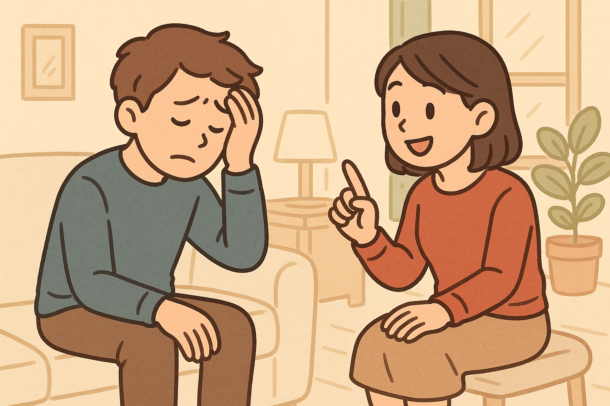

1. 아침에 일어나면 제일 먼저 무엇을 해요？
2. 어렸을 때부터 계속 하고 있는 것이 있어요?
습관
Q: 이 사람은 어떤 습관이 있어요?
‘습관’은 자주 반복하는 행동이에요.
‘몸이 피곤해도 무조건 씻고 자요.’ → 항상 하는 습관이에요.
그래서 이 사람은 ‘자기 전에 씻는 습관’이 있어요.
습관
빈 칸에 알맞은 단어을 고르십시오.
저는 매일 점심을 먹은 후에 커피를 마시는_______이 있어요.
빈 칸에 알맞은 단어을 쓰십시오.
하늘: 요즘 잠을 잘 못 자서 아침마다 피곤해.
민지: 매일 같은 시간에 자고 일어나는_______을 만들어 보면 어때?
🎉 학습을 완료했습니다!
아래 버튼을 눌러 처음부터 다시 시작하거나, 다른 학습으로 이동해 보세요.